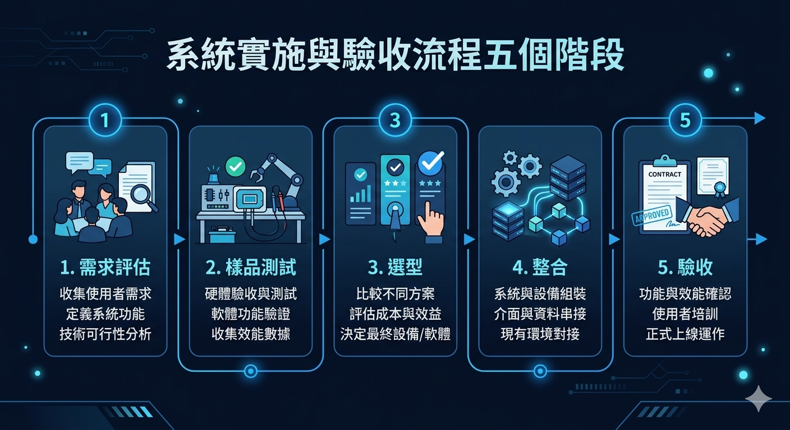

導入機器視覺,難的不是設備
很多人以為導入機器視覺就是「買一台相機加軟體」,結果實際上線後才發現讀取率不穩、誤判連連,或是跟現有設備兜不起來。問題往往不出在硬體,而是導入流程沒走扎實。
機器視覺是一套牽涉光學、演算法、機構與資訊整合的系統工程。把流程拆清楚、每一步驗證到位,才能避免上線後的返工與爭議。以下用五個階段,完整說明一個機器視覺專案該怎麼走。
導入的五大階段

一、需求評估
先把問題定義清楚:要檢測什麼、判斷標準是什麼、可接受的誤判率與漏檢率各是多少。這個階段要蒐集的關鍵資訊包括:
- 檢測項目:瑕疵類型、尺寸範圍、判定規則。
- 產線條件:節拍(每件時間)、擺放方式、環境光源。
- 現況數據:目前的良率、漏檢率、人力成本。
需求沒定義清楚,後面所有設計都會失焦。這一步花的時間,通常決定整個專案的成敗。
二、樣品測試
拿實際樣本做測試,確認「這個問題用視覺到底做不做得到」。重點是用真實產線的好品與不良品影像,測試辨識率與誤判率。
樣品測試一定要用真實樣本,尤其是各種「邊界不良品」。用挑過的漂亮樣本驗證,上線後幾乎一定翻車。
測試通過與否,是決定要不要投資的關鍵門檻。做不到就及早調整範圍或方法,避免後期投入大量資源才發現行不通。
三、選型
測試確認可行後,依樣品結果選定合適的軟硬體配置:
- 光學選型:光源、鏡頭、相機的選擇與打光方式,這是影像品質的地基。
- 演算法選擇:規則式、傳統機器學習,還是深度學習,依缺陷特性而定。
- 機構與治具:如何固定與帶動待測物,確保每次成像一致。
選型要以樣品測試的數據為依據,而不是憑規格表,避免買了高階設備卻不對症。
四、整合
把視覺系統接進現有產線,與 PLC、MES、機械手臂或既有 AOI 設備串接。這一步的重點是介面與訊號時序:視覺判斷結果要在對的時間點,傳給對的設備做對的動作(過站、剔除、報警)。
整合階段也會在真實產線上試跑,收集實際數據、微調參數與模型,並建立誤判與漏檢樣本的回收機制,讓系統越用越準。
五、驗收
依需求評估階段訂下的指標(辨識率、誤判率、漏檢率、節拍)實際量測,確認系統達標才算導入完成。驗收建議:
- 用明確數據驗收:以雙方事前約定的指標與樣本數量為準,不憑感覺。
- 涵蓋各種情境:不同批次、不同光線、各類不良品都要測到。
- 確認交付文件:操作手冊、維護方式、模型更新流程都要交接清楚。
常見的導入地雷
從實務經驗,以下幾點最容易踩雷:
- 跳過樣品測試直接下單:設備買了才發現做不到,損失最大。
- 用漂亮樣本驗證:上線遇到真實不良品就破功。
- 忽略光源設計:影像品質不穩,再好的演算法也救不回來。
- 沒規劃資料回收:模型無法持續進步,誤判率降不下來。
結語
機器視覺導入是一場系統工程,走對流程比買貴的設備更重要。從需求評估、樣品測試、選型、整合到驗收,每一步驗證到位,才能真正落地見效。
如果你正要導入機器視覺,不知道從何評估起,歡迎與我們聯絡,我們可以從需求評估與樣品測試開始,陪你把專案走扎實。